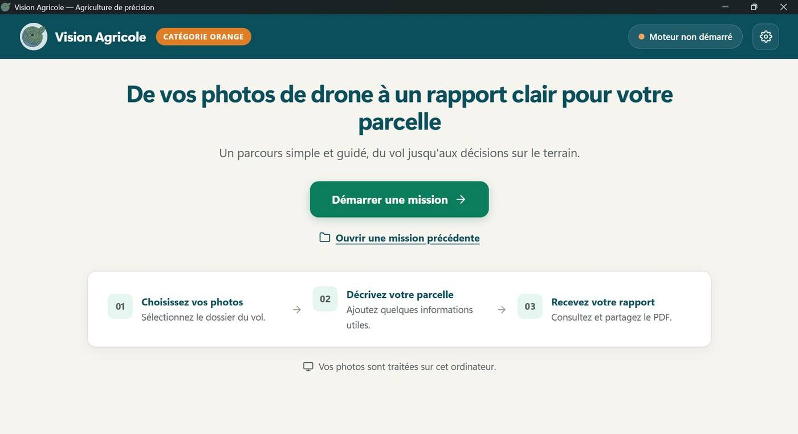
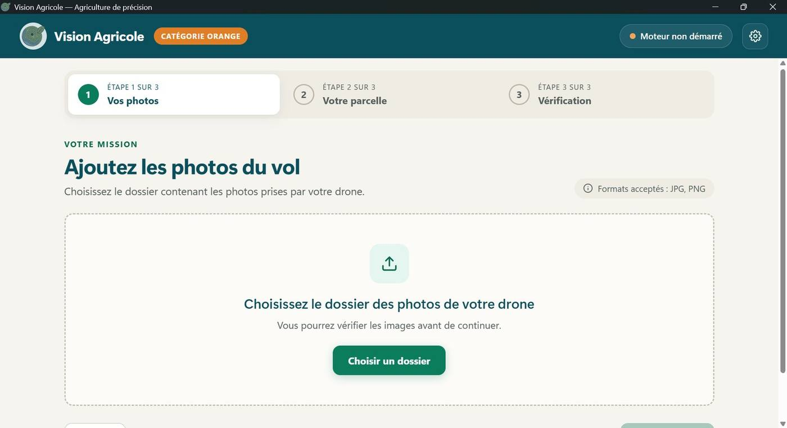
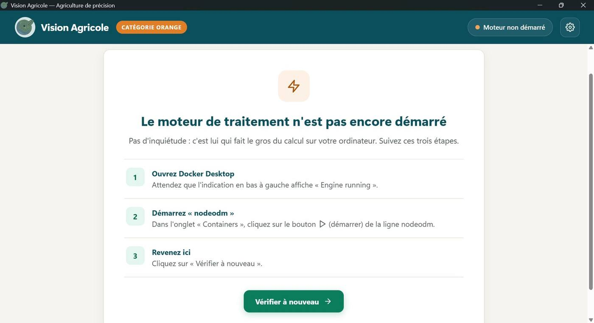
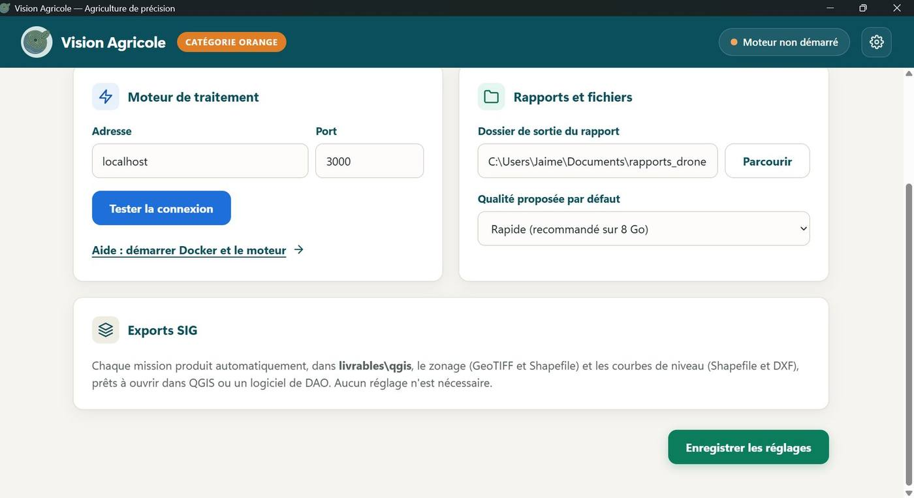
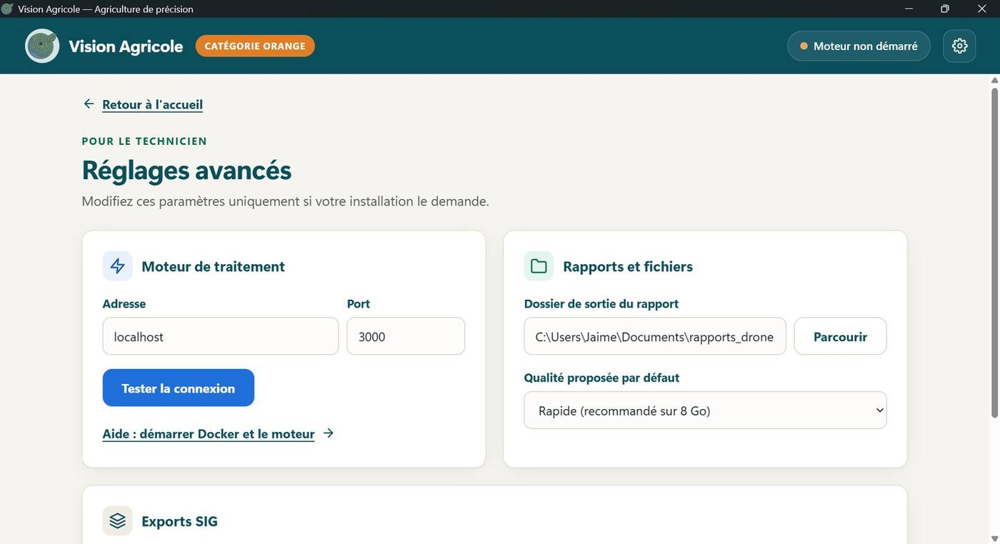
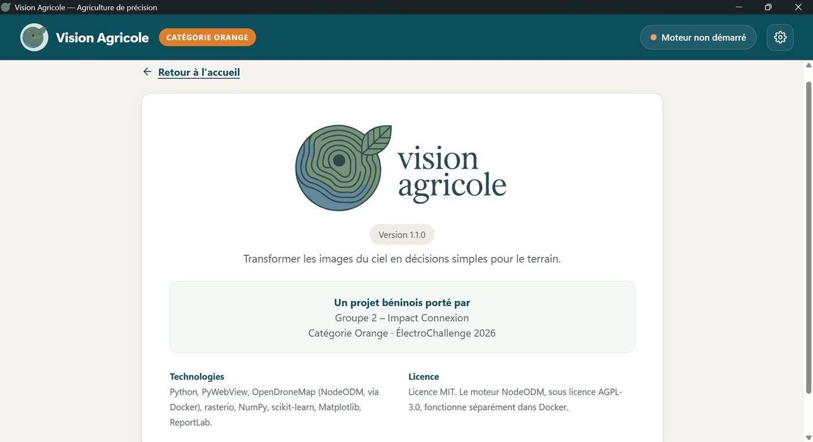
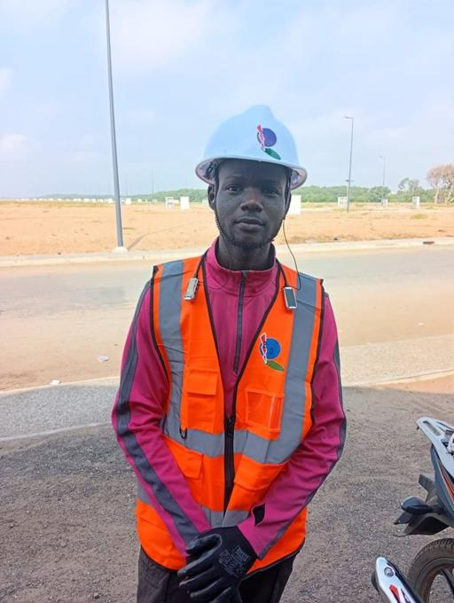
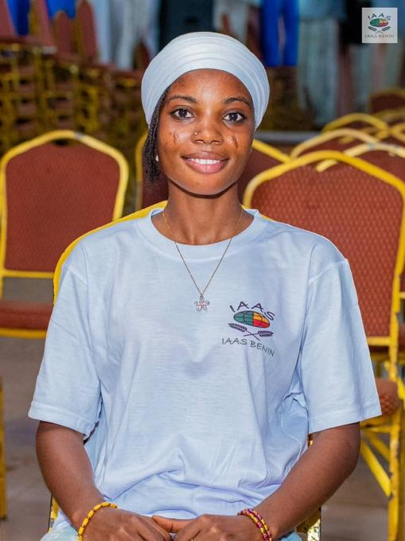

De vos photos de drone à un rapport clair pour votre parcelle
Transformer les images du ciel en décisions simples pour le terrain.

Lauréat de l'ÉlectroChallenge 2026 – Catégorie Orange
Le problème
Une parcelle vue du sol cache l'essentiel : où les plantes souffrent, où l'eau stagne, où intervenir en premier.
Un drone voit tout, mais ses photos brutes ne disent rien à un agriculteur.
Comment ça marche
Trois étapes, du vol de votre drone jusqu'au rapport.
-
Choisissez vos photos
Indiquez le dossier du vol de votre drone.
-
Décrivez votre parcelle
Quelques informations utiles : parcelle, exploitant, date.
-
Recevez votre rapport
Consultez et partagez le PDF.
Ce que vous obtenez
Des réponses claires pour votre parcelle, pas des données brutes.
Une carte de santé de vos cultures
Les zones vigoureuses et les zones faibles, d'un coup d'œil.
Un zonage de la parcelle
Où agir en priorité, où tout va bien.
Pentes et zones basses
Repérez l'eau qui stagne ou qui ruisselle.
Un verdict en mots simples
La santé globale de la parcelle, expliquée sans jargon.
Un rapport PDF en français
Prêt à imprimer ou à partager.
Des fichiers pour les techniciens
Zonage et courbes de niveau pour QGIS et la DAO, ajoutés automatiquement.
Le rapport est une aide à la décision. Il ne remplace ni l'avis d'un agronome, ni une analyse de sol.
Voyez-la en action
Des captures de la vraie application, version 1.1.0.

Étape 1. Choisissez le dossier des photos de votre drone. 
Un guide pas à pas si le moteur de traitement n'est pas encore démarré. 
Fichiers pour QGIS et la DAO créés automatiquement, sans réglage. 
Réglages pour le technicien. La qualité « Rapide » est recommandée sur 8 Go. 
À propos. Version 1.1.0, licence MIT.


Faites glisser pour voir les autres captures. Touchez une image pour l'agrandir.
Un outil fait pour le terrain
Simple et guidé
Un parcours en 3 étapes, pensé pour l'agriculteur et son technicien.
100 % en français
Les écrans, les explications et le rapport PDF.
Vos photos restent chez vous
Le traitement se fait sur votre ordinateur. Vos photos ne sont pas envoyées sur Internet.
Gratuit et libre
Licence MIT. Le code est public sur GitHub.
Conçu au Bénin
Lauréat de l'ÉlectroChallenge 2026, Catégorie Orange.
Pour les drones courants
Pensé pour les photos de drones courants. Testé avec un DJI Mavic 3 Enterprise (photos RGB).
Notre histoire en bref
Né en quelques jours, validé devant un jury.
Tout commence à la mi-juillet 2026, avec l'ÉlectroChallenge. Nous postulons chacun de notre côté, passons un test de sélection, puis nous nous retrouvons en équipe autour de notre mentor, Renaud DANVI.
Notre catégorie, la Catégorie Orange, porte sur la cartographie agricole par drone. Le vrai travail démarre le 13 août, sur un vrai terrain.
Le 19 août, nous présentons Vision Agricole devant le jury. Nous remportons la catégorie, et Jaime reçoit le titre de meilleur participant.
Depuis, l'application continue d'évoluer et nous l'utilisons déjà dans des projets.
Les personnes derrière l'application
Jaime Jordi DEGUE
Chef d'équipe. Meilleur participant de l'ÉlectroChallenge 2026.

Constantino GBAGUIDI
Adjoint au chef d'équipe. Auteur de la version 0.0.0.
Serge-Olivier ADIGBLI
Côté technique, gestion des dépendances.

Awèni OYENIRAN
Valorisation et marketing.
Mentor : Renaud DANVI.
Essayez Vision Agricole sur votre PC
Gratuit, pour Windows.
Vision Agricole 1.1.0 pour Windows
Un seul fichier à lancer : pas besoin d'installer Python.
Télécharger pour Windows- Un ordinateur sous Windows.
- Docker Desktop et le moteur de traitement (NodeODM), expliqués pas à pas dans le README.
- Sur un PC de 8 Go : choisissez la qualité « Rapide ».
Mac : une version peut être construite depuis le code source (non testé). Pour les techniciens : voir la page technique.
Windows affiche un avertissement ?
C'est normal pour un nouveau logiciel qui n'est pas encore signé. Pour le lancer :
- Cliquez sur « Informations complémentaires ».
- Puis sur « Exécuter quand même ».
Vous préférez vérifier d'abord ? Utilisez l'empreinte et l'analyse ci-dessous.
Vérifier le fichier
Empreinte SHA-256 de Vision.Agricole.exe :
ecf9f03b36ac40f7828d46675f0bd0000a16663846c9f8efcf3a6da1eadc9c0e
Sous Windows, dans l'Invite de commandes : certutil -hashfile Vision.Agricole.exe SHA256 (avec le nom du fichier téléchargé). Le résultat doit être identique.
Vos questions
Quel drone faut-il ?
Des photos aériennes JPG ou PNG de bonne qualité, avec un recouvrement entre les images. L'application a été testée avec un DJI Mavic 3 Enterprise (photos RGB).
Faut-il Internet ?
Pas pour le traitement. Il faut Internet la première fois, pour télécharger Docker et le moteur de traitement.
L'estimation du sol en ligne (SoilGrids), qui est facultative, utilise aussi Internet.
Mes photos sont-elles envoyées quelque part ?
Non. Tout reste sur votre ordinateur.
Combien de temps dure un traitement ?
Cela dépend du nombre de photos et de la puissance de votre PC. L'application affiche la progression et le temps écoulé. Ne la fermez pas et ne mettez pas le PC en veille pendant le traitement.
C'est payant ?
Non. Vision Agricole est gratuit et libre, sous licence MIT.
Où trouver de l'aide ?
Le README explique l'installation pas à pas. Pour poser une question, ouvrez une demande dans les Issues du dépôt GitHub.